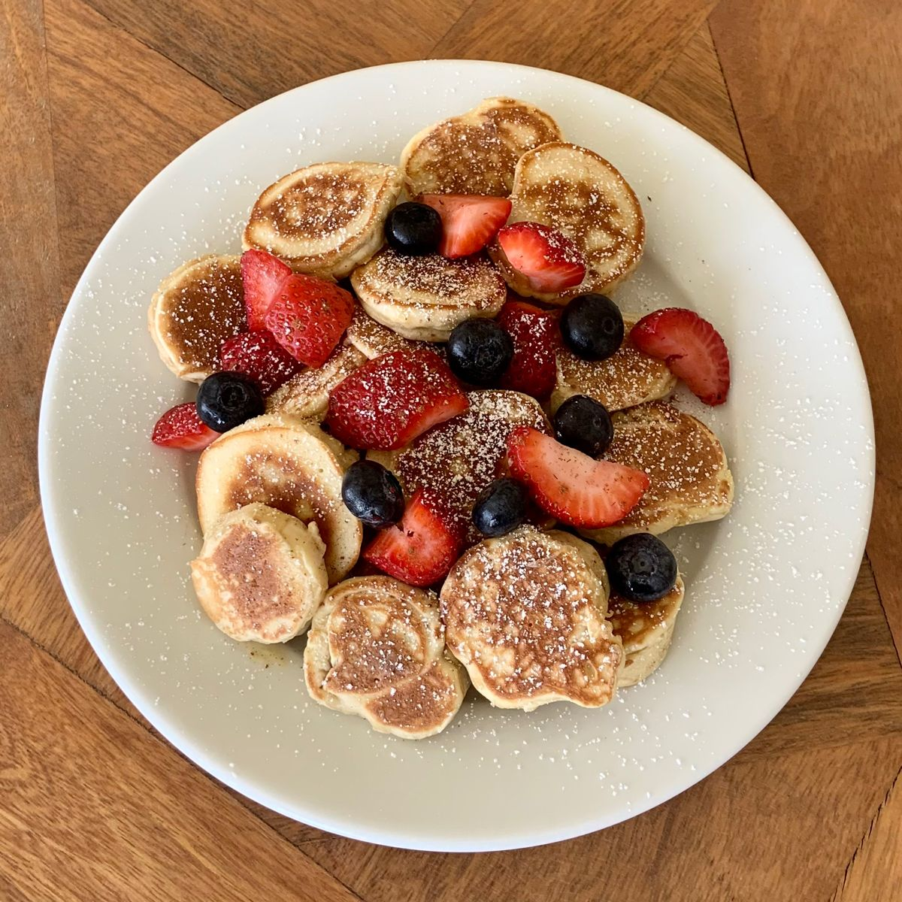

Ingredients
- 1 cup rolled oats
- 1 scoop plant-based protein powder
- 1/2 cup plant-based milk
- 1/2 tsp baking powder
- 1/4 tsp salt
- 1 tsp vanilla extract
- Optional toppings: sliced banana, berries, nut butter, seeds
Instructions
- Blend oats in a blender until they become a fine flour.
- In a bowl, mix oat flour, protein powder, baking powder, and salt.
- Add plant-based milk and vanilla extract; stir until a smooth batter forms.
- Heat a non-stick pan over medium heat and lightly grease it.
- Pour batter to form pancakes of desired size; cook 2–3 minutes on each side until golden.
- Stack pancakes in a bowl and add desired toppings like fruit, nut butter, or seeds.
- Serve immediately and enjoy a protein-packed breakfast!